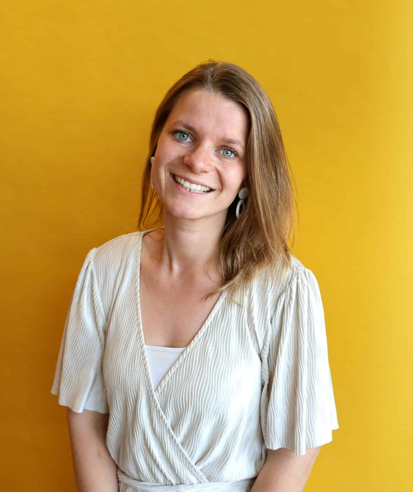

Teamlid
Antoinette Oosterwijk
Wat leuk dat je een kijkje neemt op onze website! Graag vertel ik je iets over mijn ervaring bij DIS Group, zodat je een goed beeld krijgt van hoe het is om hier te werken.
Ik ben Antoinette en sinds drie jaar ben ik met veel plezier werkzaam bij DIS Group als functioneel beheerder. Daarvoor heb ik zo’n tien jaar gewerkt bij een bedrijf in de installatietechniek, waar ik op de financiële administratie zat. In die periode heb ik al uitgebreid kennisgemaakt met 4PS. Dat kwam goed van pas: ik kende al verschillende modules vanuit de gebruikerskant. Natuurlijk was het even wennen om nu “aan de andere kant” te zitten, maar door de jaren heen heb ik veel geleerd en blijf ik mezelf ontwikkelen.
Wat mijn werk leuk en uitdagend maakt
Wat dit werk voor mij zo leuk maakt, is dat geen dag hetzelfde is. We pakken alles echt samen op als team en de lijntjes zijn kort. Iedere dag evalueren we met elkaar de openstaande vragen en dit werkt voor mij erg goed. Dat zorgt voor een prettige, open werksfeer waarin je snel kunt schakelen. Daarnaast vieren en delen we successen met elkaar.
Ik haal veel voldoening uit het helpen van klanten en word er blij van als zij dat ook zijn. Daarom zet ik me elke dag in om hen zo goed mogelijk te ondersteunen en te woord te staan.
Waarom ik graag bij DIS werk
Ik werk graag bij DIS Group omdat het een kleiner bedrijf is. Je kent je collega’s goed, weet wat je aan elkaar hebt en iedereen staat voor elkaar klaar. Samen zoeken we altijd naar de beste oplossing en er is veel ruimte voor ideeën en overleg. Die betrokkenheid en behulpzaamheid maken dat ik elke dag met plezier naar mijn werk ga.
Neem contact op
